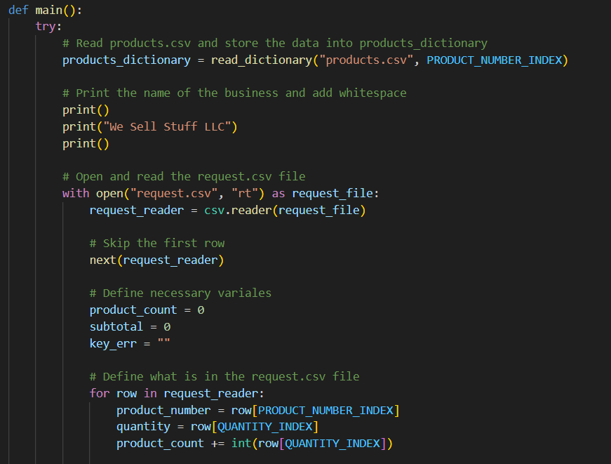

Web Development
 One of my projects I completed in a Web Development class at BYU - Idaho was a website for a white water rafting company. This website showcases my skills so far in HTML and CSS, and the site itself consists of three pages (a home page, a blog page, and a contact us page that includes a form). During this assignment I also became familiar with Microsoft Visual Studio Code.
One of my projects I completed in a Web Development class at BYU - Idaho was a website for a white water rafting company. This website showcases my skills so far in HTML and CSS, and the site itself consists of three pages (a home page, a blog page, and a contact us page that includes a form). During this assignment I also became familiar with Microsoft Visual Studio Code.The image to the right is a link to the website.
Python

My "Programming with Functions" class taught me the basics of writing code with Python, using Microsoft Visual Studio Code as an IDE. During this course I learned how to:
-
Write and call functions in programs to accomplish meaningful tasks, research and call functions written by others.
-
Write programs that can detect and recover from invalid conditions.
-
Use libraries and objects written by others.
-
Follow good practices in designing, writing, and debugging functions.
Microsoft SQL Server
While I owned and operated Fink's Intigration Services LLC, I gained experience in analyzing, organizing, and manipulating data in Microsoft SQL Server. My job was to take data with an outdated N2 format and integrate it into a SQL database. This data included the name, location, and status of all the mechanical equipment in a hospital building. To accomplish this, I used a tool called Metasys, which helps organize building automation systems and make them more efficient. After the integration was complete, I was tasked with maintaining the database and controling the mechanical equipment remotely from my office. I also trained the hospital's maintenance team on how to troubleshoot using a simplified form of the database to pinpoint what equipment was operating outside of the set acceptable parameters.